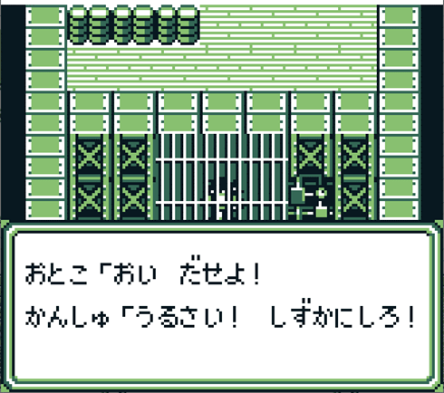
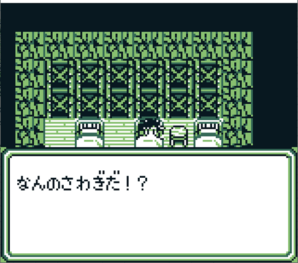
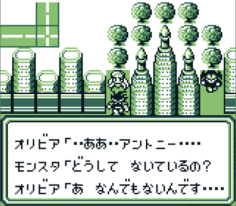
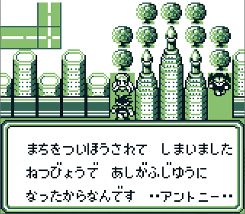
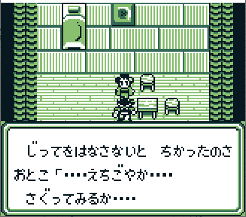
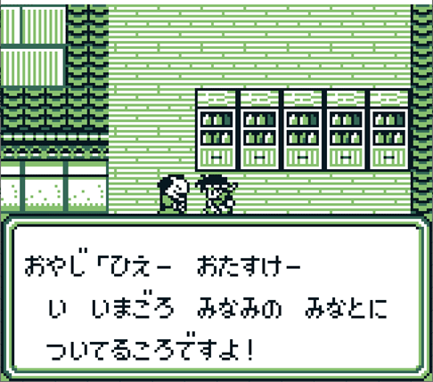
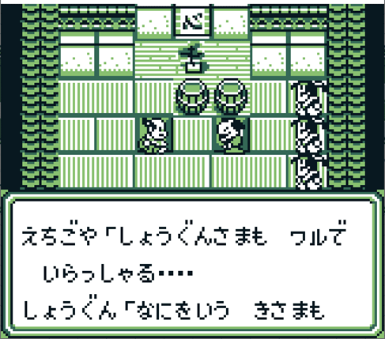
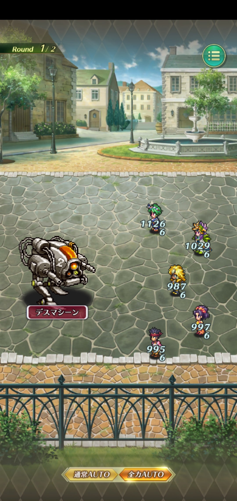

Sa・Ga2 秘宝伝説
ホーム > ＧＢサガ > サガ30周年記念イベント > Sa・Ga2 秘宝伝説編
ここではゲームボーイ（以下GB）版のSa・Ga2 秘宝伝説と、ロマサガRSで出てきたネタを紐づけていきたいと思います。
Sa・Ga2 秘宝伝説の大まかな話の流れを追いかけつつ、ロマサガRSでもこんな感じで扱われてたよねー、という形で紹介していきます。
Sa・Ga2 秘宝伝説のネタバレを多分に含むため、ネタバレを見たくない方はここから先を見る前にブラウザの戻るボタンで戻るか、✖ボタンでブラウザを閉じてください。
Sa・Ga2 秘宝伝説の世界観
GBでSa・Ga2 秘宝伝説を起動して「はじめから」を選択すると冒険開始。
最初に出てくる画面がこれです。
「秘宝」というアイテムを廻った物語ってことです。
キャラクタ選択画面。魔界塔士 Sa・Gaと似てます。エスパーギャルがガールになったのが一番の違いかな。時代を感じます（笑）。
にんげん、エスパー、メカ、モンスターの中からまずは主人公を選択します。
魔界塔士Sa・Gaにあった、モンスターが肉を食べて変身するシステムも健在です。
ロマサガRSの30周年イベントで実装されたせんせいの技の一つが「イートザミート」という技です。
肉が降ってきて、せんせいが別のモンスターに変身して攻撃するという技なのですが、これはこのシステムを元ネタにした技です。
変身するモンスターは三種類いて、あくま、ラムフォリンクス、ぼくじんです。
イートザミート→Eat the meat. 肉を食えってことですね。
※すいません。動画編集技術がいまいちで、動画のサイズ調整が全体的にうまくいきません。スマホで見ている方は特にきついと思いますが、全画面表示ならなんとか見れると思います。
変身するモンスターの画像です（制圧戦で出てきた敵）。
第一世界
主人公を選択するとちちおやとのやり取りから始まります。
なぜか窓から出ていくちちおや。
これはちちおやのホーム画面でのセリフであり、ガチャ演出の場面でもあります。

月日は流れ、旅から帰ってこないちちおやを捜しに行くと、ははおやに相談する主人公。ちちおやと一緒に帰ると約束して旅立ちます。
せんせいとの会話。これ大事なのですが、秘宝は77個です。

これはせんせいのガチャ演出になった場面ですね。
町から出ようとするとせんせいが仲間になります。
最初の洞窟に行きます。
洞窟の出口には敵が待ち構えています。ラムフォリンクスという敵です。
これはローディング画面にもなっていました。制圧戦でもこの敵は出てきましたね。
洞窟を出るとせんせいと別れます。そのまま近くにある町に行くと、ちちおやらしき人がいるので追いかけますが、、、、人違いでした。。
これはローディング画面にもなっていました。
・・・これ、特に重要な場面でも何でもないんですけど、何でこの場面を選んだんでしょうね？ｗ結構謎です。笑
第一世界はこんなもんです。
第二世界
第二世界は小さい世界です。この世界では、魔界塔士Sa・Gaでは後半のボスだったアシュラがもう出てきます。
魔界塔士Sa・Gaで使ってきた６ぽんのうでは健在です。逆にそれ以外の技（ヒーリング、３つのあたま、フレア）は使わなくなりました。
ここでのアシュラとの会話はローディング画面でも使われていました。
第三世界
第三世界の最初のまちでちちおやと再会しますが、ここでは会話だけで終わります。
この世界は特にネタもないのでそのまま次の世界に行きます。
第四世界
第四世界にはアポロンの神殿があり、中に入るとこの人、アポロンがいます。
アポロンとのファーストコンタクトはこの程度で終わります。
これはガチャ演出の場面であり、ホーム画面にいるアポロン（♪付きアポロン）をタップする時のセリフでもあります。
この世界で再度、ちちおやを見かけますが、リンという子に「おとうさん！」と呼ばれています。
・・・え、まさかふリン！？この後、主人公たちはちちおやとは直接会話せず、「秘宝を集めて父親を見返す！」と言って先の世界に進みます。

第五世界
第五世界はガーディアンという組織の秘密基地があります。
ジュークボックスを使え！というヒントをもらえるので使ってみます。
ゆうしゃのテーマを選ぶと、ガーディアンの秘密基地につながり、中からガーディアンが出てきます。

というわけでホーム画面でちちおやが言っていたテーマ曲というのは「ゆうしゃのテーマ」という曲です。
ゆうしゃのテーマはこんな曲です。
牢屋に入れられますが、ちちおやに助けられます。

ちちおやはガーディアンという組織の幹部で、大佐と呼ばれているらしい。
父親に言われて休んでいると、ガーディアンの秘密基地が襲われます。

脱出しようとするとちちおやがいます。その時の会話。前の世界のふリン疑惑で、主人公はちちおやに不信感を持っていますが、ちちおやの反応は・・・？

逃げた先では敵が待ち構えていて、そこでの敵との会話。どうやらリンが人質に捉えられてしまった模様。
追いかけた先での会話。ふリンはどうやら誤解だったらしい。

誤解だったのか、良かった・・・って思ってたら、え？え？？
（突然自爆するちちおや）
このシーンは、サガシリーズでお馴染みの「涙を拭いて」のSa・Ga2 秘宝伝説版が流れるシーンなので動画でどうぞ。
このあと戦闘になりますがさして強くもない。
ちちおやがいなくなってショックを受けるが、秘宝を探す旅を続けると決める主人公達。
この世界の秘宝が集め終わったので、次の世界に進みます。
第六世界
次はビーナスの世界。美しいものに目がないご様子。。
ビーナスは結構やりたい放題。


オリビアの結婚相手。
ビーナスの町の外にある小さい町にアントニーがいます。アントニー、服着てますか？？ｗ
秘宝を集めていると、ひとつアントニーに奪われてしまう。

ビーナスの町に戻ると結婚式が始まります。ここのやり取りは好きです。印象に残ってる人多いんじゃないかな？
今のあんたが一番醜いぜ！
これはローディング画面にもなっていました。
この後ビーナスと戦闘して勝てばこの世界は終わりです。
続いて、レースの世界。ここはアポロンが再登場するぐらいしかネタがない。
アポロンとの会話もこの程度しかないです。
秘宝を集めたら次の世界に行きます。
第七世界
江戸の世界
江戸というだけあって、出てくるキャラクターはそれっぽい名前の人が多いです。
このおたまというキャラクターは、えちごやの悪事を暴くために活動している様子。

こいつがえちごやです。密貿易の証拠を押さえるために脅迫めいたことをしだす主人公ｗ

しかしその甲斐あって、密貿易の証拠を押さえることに成功。
奉行所に報告。えちごやをひっとらえるが、隠蔽されてしまいます。
えちごやに直接乗り込もうと提案する主人公達。
えちごやのお店に行くが不在。奥に行けるようになっているので行ってみると・・・。

これはローディング画面にもなっていました。
個人的には「なんだ！ このおんがくは！」の方が印象深いです。
ちなみにこの場面で流れていた音楽は「Never give up!」という曲です。えちごやのセリフと音楽のかっこよさが相まって印象に残っています。
この後、戦闘になります。
江戸の世界でネタになっていたのはこれぐらいです。
続いて、意地悪なダンジョンという場所に行きます。ここは秘宝が一つあるだけです。
おビーズ好きなフォロワーさんがいますね。おビーズの細かいところに対する拘りとか、色合いとか、好きです。
第八世界
オーディンの世界。
ロマサガRSでは特にネタにはなっていないのでそのお姿だけ紹介して終わります。
第九世界
再びアポロン。ついに本性を表します。
アポロンのしもべと戦います。
戦いに勝つと、これまで出会った人たちを人質に取られます。
絶望感漂う中・・・・
秘宝は77個あるといったな。あれは嘘だ。
最後の秘宝を求めてさいごのダンジョンに向かいます。
最後の町
これはローディング画面にもなっていました。
最後のダンジョンで秘宝を守っているボスと戦います。

これはローディング画面にもなっていました。また、ここで戦う敵は制圧戦でも出てきた敵です。

戦いに勝つと、最後の秘宝を手に入れることができます。

最後の秘宝を手に、アポロンとの戦い。
ロマサガRSでもこの戦いは再現されていたので動画で見てください。
GB版アポロンとの戦い（変身前～変身するまで）
GB版アポロンとの戦い（戦闘中～爆発するまで）
※1分15秒あたりから爆発が始まります。
これをロマサガRSで再現したのがこれです。
ロマサガRS版アポロンとの戦い（変身前～変身するまで）
ロマサガRS版アポロンとの戦い（戦闘中～爆発するまで）
原作では、アポロンが爆破するとちちおやが庇ってくれますが、ロマサガRSでは庇ってくれません。
（下の動画のちちおやは倒れていますが、起きていたとしても庇ってくれないらしいです。）
アポロンはこれで終わりです。アポロンはラスボスではないので、Sa・Ga2 秘宝伝説としてはまだ続きがあります。しかし、ロマサガRSではネタにはなっていないので、ラスボスについてはこの記事では書きません。
はにわ
2020/08/30(日)は突然はにわが裏道場に現れ、twitterのTLがはにわだらけでしたね（笑）。
これは本当に良いサプライズだと思いました！
技
アビリティ
当時のはにわとの戦闘風景。最後普通に負けます（笑）。
これがSa・Ga2 秘宝伝説のはにわ。ラスボスがいるフロアで雑魚敵として出てきます。この見た目でラスボスより強いです。

使ってくる技
じしん（全体攻撃）。結構痛いが、イージスのたてで無効化できる。
フレア（全体攻撃）。ダメージはじしんと変わらないが、イージスのたてでも防げません・・・
再生（ターン終了時）。
たいあたり。これだけはやさしい。
しちしとう（単体攻撃）。一応言っておきますけど、こっちのHPの最大値は基本的には999ですよ（笑）
このしちしとう、たまに、はにわがレアアイテムでドロップします。こっちが使っても頑張れば10,000以上のダメージをたたき出すことができます。
Sa・Ga2 って、1,000ダメージ出れば相当強いんですけどね・・・。
ちなみに、ラスボスのHPは10,000なので、やろうと思えばしちしとうの一発で片付けることが可能らしいです。
参考：All About 防衛システム！
原作でこれだけ強かったはにわ。裏道場で登場したはにわが強かったのがなぜか嬉しかったです（笑）
エンディング
魔界塔士Sa・Ga同様、この記事をどうやって締めればいいのかよくわからないのでエンディングの動画を乗せておきます。
Sa・Ga2 秘宝伝説は以上です。
もしまだ見ていなければ魔界塔士Sa・Gaの記事もよろしくお願いします。
Sa・Ga2 秘宝伝説